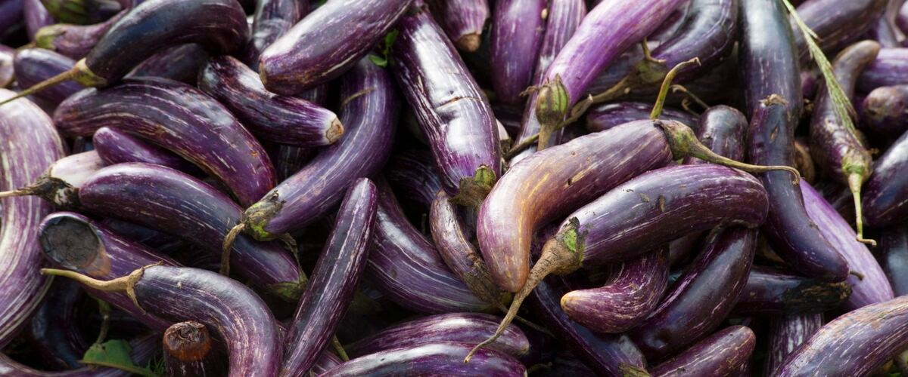

When to plant eggplant in Omak and Okanogan, WA
Start eggplant from seed indoors Mar 11–25, then plant the young plants in the garden in Omak and Okanogan May 20 – Jun 10.
Why these dates
Omak and Okanogan's typical last spring frost is April 30. Frost kills eggplant, and warm-season crops also need warm soil. Soil here stays cold for weeks after the last frost, so planting waits until about May 20.
Inland Northwest. Higher, colder interior valleys. Cold springs and an earlier fall mean a shorter season; quick-maturing varieties pay off.
- Difficulty
- Tricky here
- Sun
- Full sun; the hottest spot you have
- Spacing
- 18 to 24 inches apart
- Planting depth
- Plant starts at the depth they grew in the pot
- Frost
- Killed by frost
- First harvest
- About 80 days after planting
Step by step
- Start seeds indoors Mar 11–25 in trays or small pots under a grow light or in your sunniest window. Or skip this step and buy young plants (starts) at a garden center.
- Harden off the young plants: about a week before planting, set them outside for a few hours a day, a little longer each day.
- Plant them in the garden May 20 – Jun 10, 18 to 24 inches apart. Plant starts at the depth they grew in the pot.
- Water deeply once or twice a week rather than a little every day, and mulch once the soil is warm.
- Harvest: Pick when the skin is glossy and springs back when pressed. Dull skin means it's overripe and seedy.
Varieties that do well here
- Hansel (early, small fruit)
- Fairy Tale
- Orient Express
Watch out for
Flea beetles riddle young leaves, and cool nights stall growth. Keep row cover on until plants are growing strongly.
Needs even more heat than peppers. Small-fruited, early varieties do best west of the Cascades, helped by black plastic mulch or a warm wall. Hot eastern valleys grow them easily.
Common questions
When is the last frost in Omak and Okanogan, WA?
Typically April 30. In 9 years out of 10, frost is over by May 15. These are 1991–2020 NOAA climate normals for Omak Airport.
Is it too late to plant eggplant in Omak and Okanogan?
The spring planting window runs through June 10. Later plantings may not have time to produce before the first fall frost, which usually arrives around October 7.
When should I start eggplant from seed indoors in Omak and Okanogan?
March 11 to March 25, which is 10 to 8 weeks before the May 20 planting date. Or buy young plants at a garden center instead.
Also plant in Omak and Okanogan around the same time
Planting dates for eggplant in nearby areas
- Ellensburg, WA May 20 – Jun 10
- Spokane, WA May 20 – Jun 10
Full planting calendar for Omak and Okanogan · Eggplant in every city